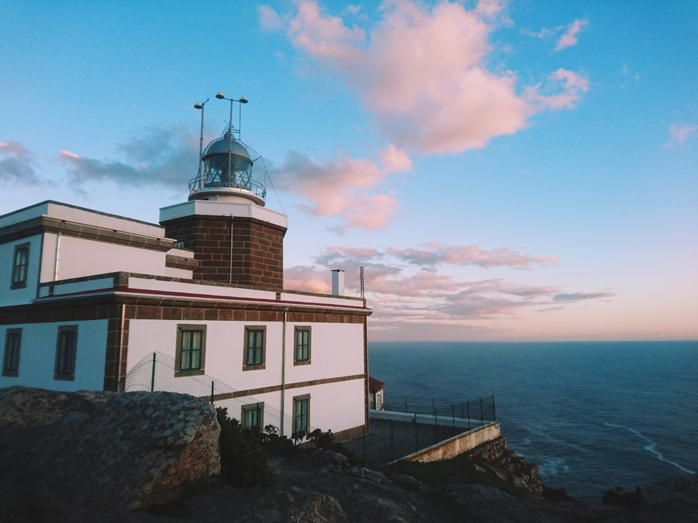

Существует около 15 различных вариантов Пути, но самых популярных четыре: Французский (800 км через Пиренеи и по центральной Испании), Примитиво (315 км, старейший и самый сложный маршрут из Овьедо), Северный путь (860 км по северному побережью Испании) и Португальский (400 км из Лиссабона или 240 км из Порту вдоль океана). В среднем, путники в день проходят по 20-30 км, и таким образом Французский путь преодолевают за 32 дня, а из Порту в Сантьяго доходят за десять. Конечно, не каждый может физически пройти такие расстояния – многие сокращают дистанцию или идут не спеша, растягивая время в пути. Есть даже те, кто проезжает Камино на велосипедах или верхом на лошадях. Но в основном пилигримы идут. Для официального «зачета» нужно пройти 100 км, и неважно, какой отрезок это будет – начать можно в любом месте.
